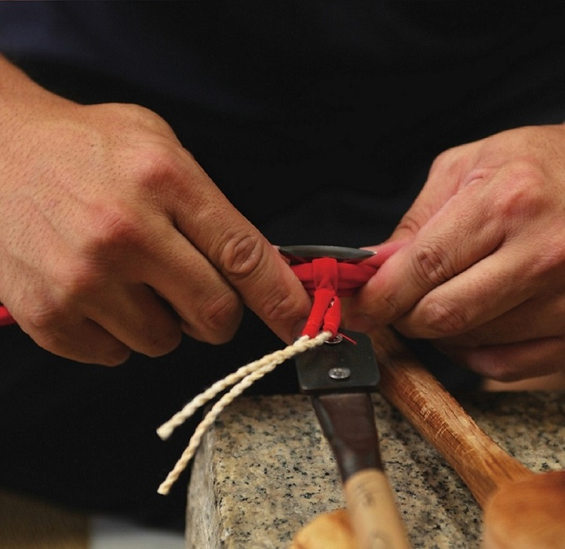
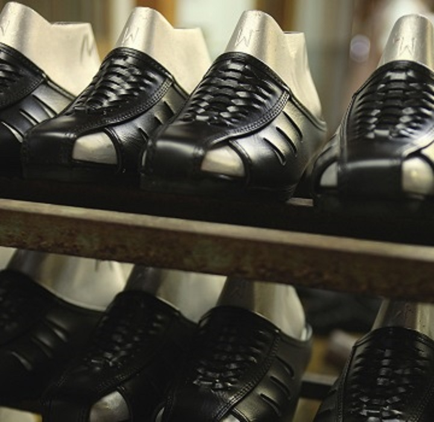
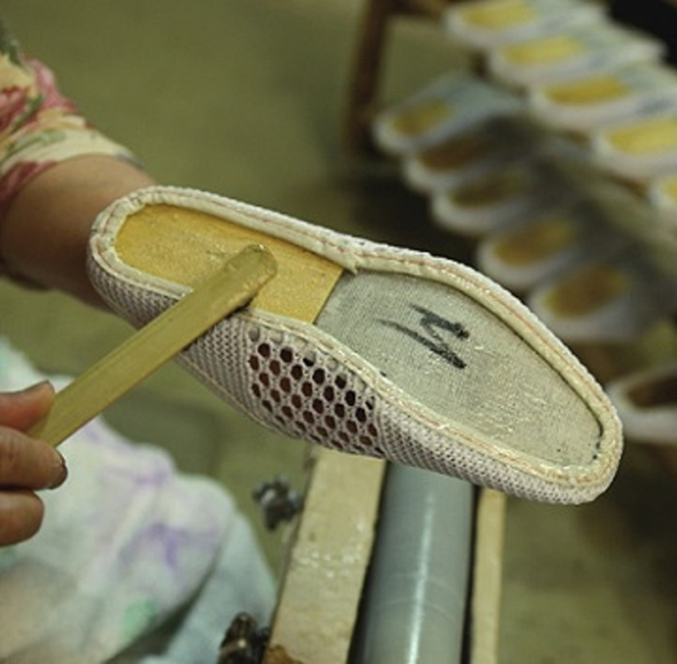
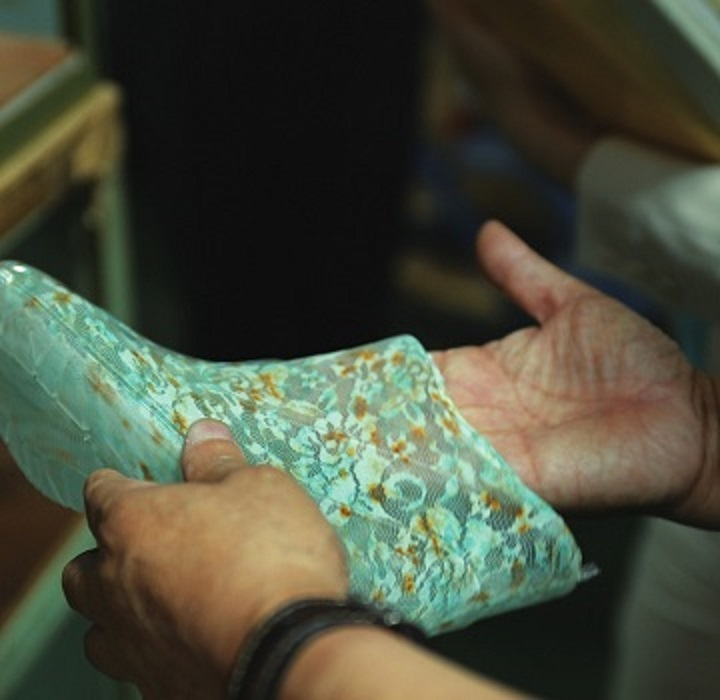
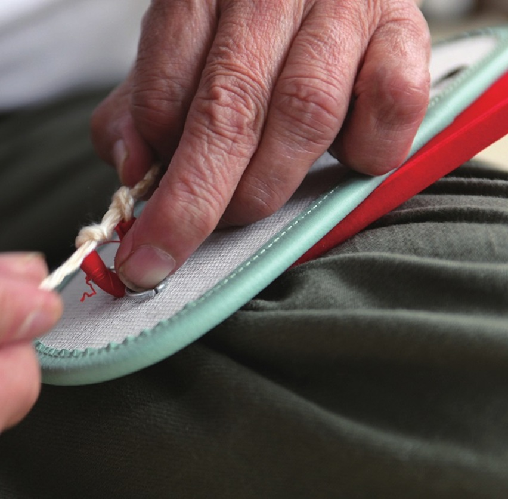
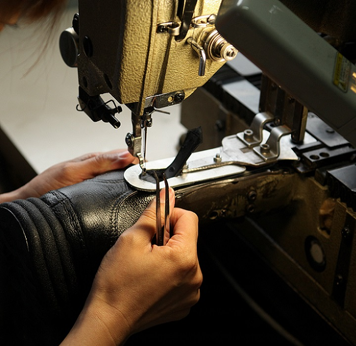
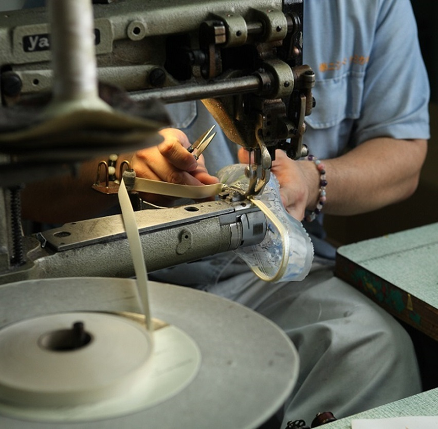
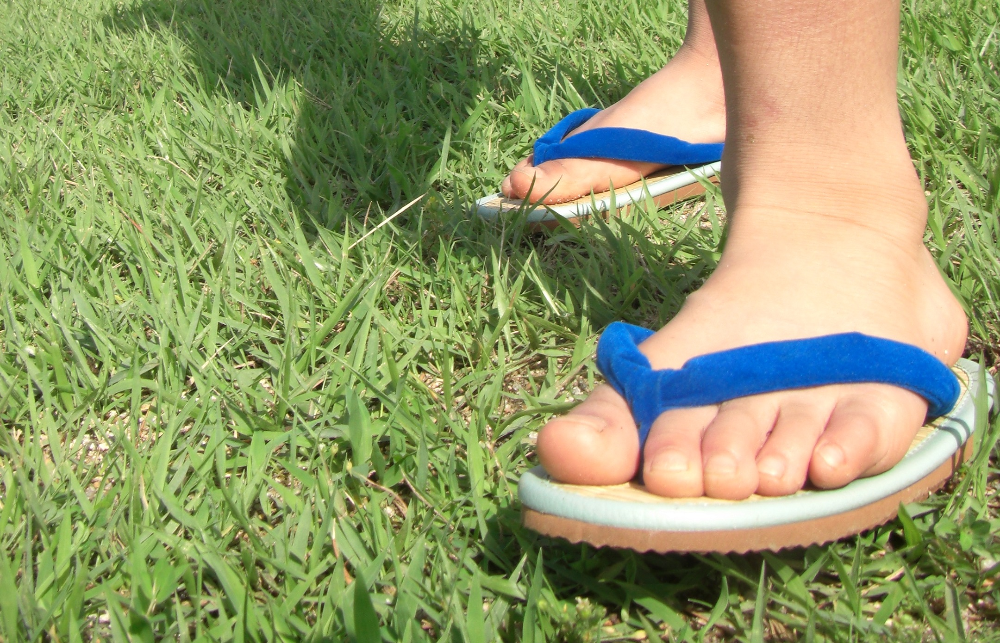

奈良県履物協同組合連合会は1982（昭和57）年3月に設立し、1985（昭和60）年には350社を超える組合員を数え、1986（昭和61）年には活動拠点として御所市産業振興センターが設置されました。連合会設立以前の1973（昭和48）年から「奈良県はきもの大見本市」として展示会商談会、1988（昭和63）年から消費者の認知度と組合員の質的向上を図る事を目的に「サンダル履物コンテスト」並びに人材育成に資する「研修会」の開催など、関係期間の協力を得て各種業界支援の取組みを行っています。
奈良県履物協同組合連合会
MESSAGE
GALLERY








KEYPRODUCT
和装履き
「ならはきもの」の礎ともなる和装履きは、下駄・和装草履・雪駄類の製品を総称しています。奈良・御所では役行者が履物の祖といった伝承もありますが、明治初期に鼻緒の生産が始まり、昭和20年代後半には草履にゴム底を使用することで耐久性と履き心地が改良されて以来、日本の気候風土に適した機能を備えた和装履き製品の開発が重ねられ、その技術が脈々と受け継がれています。
サンダル
昭和30~40年代のサンダルブームに乗ってファッション性を加味したヘップサンダル（フロントオープン・パックレスタイプ）が誕生しました。ヘップとは当時絶大な人気を誇ったオードリー・ヘップバーンにあやかったネーミングで業界の隆盛期を迎えました。その後、つま先部分を覆った防寒、足裏に刺激を与える健康、ビーチ、ナースなど多種多彩な「ならはきもの」が時代の要請と共に流通しています。
シューズ
昭和50年代以降ファッション文化や生活様式の変動に伴って多様な履物が供給される中、射出成形技術を用いて防水機能を活かしたカジュアルシューズ、レインシューズ、ガーデニングブーツなどが開発され、海外製品の攻勢にも抗える独自の製法や技術・企画開発力が時代に応じて柔軟に発展する「ならはきもの」として進化し続けています。
LINK/組合員

地理的には奈良県の北西部、大阪府との県境にあたる金剛葛城国定公園を基軸に北から奈良市・三郷町・王寺町・上牧町・香芝市・葛城市・大和高田市・御所市の3町5市にわたって産地形成されています。
王寺履物見本市協同組合
(株)中春商店
担当者: 中村 光夫
郵便番号: 〒636-0003
住所: 北葛城郡王寺町久度3-4-13
TEL: 0745-72-4545
FAX: 0745-72-4546
(株)真柴本店
担当者: 真柴 建夫
郵便番号: 〒636-0003
住所: 北葛城郡王寺町久度3-4-12
TEL: 0745-32-5678
FAX: 0745-32-4567
葛城市履物工業協同組合
KOSEN ツジモト
担当者: 辻本 伸
郵便番号: 〒639-2126
住所: 葛城市南花内264-6
TEL: 0745-69-5210
FAX: 0745-69-6767
ドラゴンゴム工業所
担当者: 松浦 孝則
郵便番号: 〒639-2122
住所: 葛城市106-3
TEL: 0745-62-2168
FAX: 0745-62-4636
菱田紙業
担当者: 菱田 浩二
郵便番号: 〒639-2122
住所: 葛城市106-4
TEL: 0745-62-5490
FAX: 0745-62-9088
森川ゴム工業所
担当者: 森川 啓二
郵便番号: 〒639-2123
住所: 葛城市忍海467-5
TEL: 0745-62-3618
FAX: 0745-65-1348
森川ゴム工業所
担当者: 森川 良一
郵便番号: 〒639-2123
住所: 葛城市忍海467-5
TEL: 0745-62-3618
FAX: 0745-65-1348
(株)山一
担当者: 山名 修士
郵便番号: 〒639-2123
住所: 葛城市忍海479
TEL: 0745-63-0801
FAX: 0745-63-1676
小林履物工業協同組合
中鳥草履工業所
担当者: 中鳥 成悟
郵便番号: 〒639-2311
住所: 御所市小林592-1
TEL: 0745-62-6136
FAX: 0745-62-2874
御所市ケミカル工業協同組合
(株)一歩
担当者: 山名 勉
郵便番号: 〒639-2205
住所: 御所市東辻174-1
TEL: 0745-63-0091
FAX: 0745-65-0167
丸健ゴム工業所
担当者: 増田 淳士
郵便番号: 〒639-2301
住所: 御所市元町76
TEL: 0745-62-2646
FAX: 0745-63-0228
(株)マルサンフットウエア
担当者: 西邨 安雄
郵便番号: 〒639-2301
住所: 御所市元町85-1
TEL: 0745-65-2105
FAX: 0745-65-0159
西和ヘップサンダル工業協同組合
磯部商店
担当者: 磯部 通弘
郵便番号: 〒639-0214
住所: 北葛城郡上牧町上牧4705-2
TEL: 0745-77-8370
FAX: 0745-77-6637
ダルマゴム工業所
担当者: 西尾 朝夫
郵便番号: 〒639-0265
住所: 香芝市上中475-1
TEL: 0745-77-3986
FAX: 0745-78-3986
中村サンダル
担当者: 中村 知也
郵便番号: 〒639-0265
住所: 香芝市上中450-3
TEL: 0745-77-7070
FAX: 0745-77-7109
(株)丸宗
担当者: 中村 吉則
郵便番号: 〒639-0214
住所: 北葛城郡上牧町上牧3439-32
TEL: 0745-76-8833
FAX: 0745-76-8083
奈良県サンダル工業協同組合
(株)カワムラ企画
担当者: 川村 三津男
郵便番号: 〒635-0077
住所: 大和高田市大字池田220-4
TEL: 0745-52-1866
FAX: 0745-51-0764
丸山ゴム工業所
担当者: 丸山 庸誉
郵便番号: 〒630-8453
住所: 奈良市西九条町3-11-17
TEL: 0742-62-3078
FAX: 0742-62-3078
クローバー
担当者: 酒田 幸
郵便番号: 〒636-0821
住所: 生駒郡三郷町立野北1-38-12
TEL: 0745-72-2348
FAX: 0745-72-7173
酒田工業所
担当者: 酒田 淳吾
郵便番号: 〒636-0821
住所: 生駒郡三郷町立野北1-31-21
TEL: 0745-72-2543
FAX: 0745-32-3537
酒田ゴム工業所
担当者: 酒田 宣昭
郵便番号: 〒636-0811
住所: 生駒郡三郷町勢野東1-7-46
TEL: 0745-73-2461
FAX: 0745-73-2580
侘寂び屋
担当者: 芝崎 多加夫
郵便番号: 〒636-0821
住所: 生駒郡三郷町立野北1-41-4
TEL: 0745-72-2247
FAX: 0745-72-0562
田中志成商店
担当者: 田中 堅
郵便番号: 〒639-0214
住所: 北葛城郡上牧町上牧3439-20
TEL: 0745-76-8818
FAX: 0745-77-6888
(株)DESIGN SETTA SANGO
担当者: 星田 和彦
郵便番号: 〒636-0822
住所: 生駒郡三郷町立野南3-1-18 JAMビル
TEL: 0745-27-4574
FAX: 0745-73-1187
袋屋ゴム工業所
担当者: 酒田 貴央
郵便番号: 〒636-0822
住所: 生駒郡三郷町立野南1-14-24
TEL: 0745-72-2968
FAX: 0745-72-2900
ミサト履物協同組合
風本商店
担当者: 風本 圭司
郵便番号: 〒636-0822
住所: 生駒郡三郷町立野南1-6-18
TEL: 0745-72-2708
FAX: 0745-60-3386
風本商店
担当者: 風本 憲佑
郵便番号: 〒636-0821
住所: 生駒郡三郷町立野北1-39-22
TEL: 0745-72-4523
FAX: 0745-72-4523
芝惣商店
担当者: 芝崎 安伸
郵便番号: 〒636-0821
住所: 生駒郡三郷町立野北1-41-4
TEL: 0745-72-2247
FAX: 0745-72-0562
組合事務所
郵便番号: 〒636-0821
住所: 生駒郡三郷町立野北1丁目26-23
TEL: 0745-73-7822
FAX: 0745-32-5177
EFFORTS BUSINESS

全国サンダルフェア Spring＆Summer Collection in 神戸
神戸国際展示場）日本グランドシューズコレクションと同時開催
5月展 第181回 2025年05月21日(水)・22日(木)／10月展 第182回 2025年10月15日(水)・16日(木)
各出展者が取り揃えた、展示商談会になります。主催/日本ケミカルシューズ工業組合・共催/全日本ケミカルサンダル工業協同組合連合会・後援/近畿経済産業局/兵庫県/神戸市/神戸商工会議所/（公社）兵庫県物産協会/（一財）神戸国際観光コンベンション協会。
『奈良はきもの杯』
開催日2025年度 未定
「企業協賛タイトルレース」に応募し、各種の産地PR活動を行っています。期間中には奈良県営競輪場内で商品キャンペーンなどを行い奈良県産履物の良さをPRしています。県内及び近隣府県からの来場者、全国各地から集まる出場選手に対して「履物産地・奈良」と奈良県履物の良さを認識していただくことが出来る。また、スポーツ新聞（広告記事）車券出走表CS放送等にレースタイトルが表示されることにより競輪愛好家やスポーツ新聞読者に対して広く「履物産地・奈良」をPRすることができる。

『東京インターナショナルギフトショー』
開催日2026年02/4(水)～6(金)（3日間）
国内最大規模である標記展示会に出展し、全国各地から集まるバイヤーに新製品及び既存製品と「履物産地・奈良」の魅力を紹介・発信する事によって、より効果的な販路開拓やバイヤー等の評価を集約して新製品開発の参考とする事を目的とします。

『地場産品展示・即売会』
開催日2025年度未定です。
御所市内で生産される地場産品と県下の地場産業製品を一堂に集めた展示・即売会に参加しています。皆さま是非、お越しください。

『サンダル履物コンテスト』
県内産のサンダル履物製品に対する認識をより深く消費者にPRすると共に、産地業界においては更なる質的向上への研究と創造意欲を高めて頂く事を目的に各方面の協力を得ながら開催しています。
一般部門、ジュニア部門との両部門の中から13賞を設定し消費者（御所市女性対策推進連絡協議会）、業界（奈良県履物協同組合連合会）、の各代表や履物デザイナー並びに奈良デザイン協会会員などの各種分野の方々の審査を経た入賞作品数点。また、その中から5点選出し試作化がなされる。詳しい内容は、御所市HPに掲載されています。
展示：「第37回サンダル履物デザイン展」＆「ならはきもの」
日時：令和6年4月23日(火)～令和6年5月6日(月) 9：00~20：00
場所：630-8135 奈良市大安寺西1丁目1000番地 奈良県立図書情報館 TEL 0742-34-2111（代表）

『奈良県地場産品フェア』
開催日2025年度未定です。場所 馬見丘陵公園。
詳しい内容は、奈良県中小企業団体中央会HPに掲載されています。
COMPANY
〒639-2301
奈良県御所市元町1-1
TEL 0745-62-1288
e-Mail hakimono@aioros.ocn.ne.jp
営業時間 08:30〜17:15（土・日曜祝定休）
※都合により休業する場合がございます